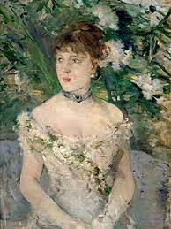

Die Epoche des Impressionismus ist eine Strömung aus dem 19 Jahrhundert, die ihre Ursprünge in Frankreich findet. Diese wurde durch die Industrialisierung ausgelöst und wegen eines großen Medienereignis beendet (Pariser Weltausstellung im Jahr 1900).
Mithilfe dieser Malerei wurde neue Bildthemen entdeckt, wie z.B. Freizeit, Licht und Atmosphäre.
Außerdem konnten die Maler erstmals dank der industriell hergestellten Farben und tragbaren Staffeleien unter freiem Himmel genau das malen, was sie in diesem Moment beobachten konnten.
Stil
Zu den gängigen Motiven des Impressionismus zählten unter anderem Landschaftsszenarien mit bäuerlichem Personal oder Spaziergängern, lichtdurchflutete Boulevardszenen mit elegant gekleideten Damen, Darstellungen von Tänzerinnen und von Frauen bei der Toilette, Blumenverkäuferinnen, Restaurantvorgärten, Flusslandschaften und Küstenstreifen. Die Natur wurde in der impressionistischen Malweise begreifbar und erfassbar wiedergegeben, aber nicht in der bis dahin üblichen naturalistischen Art, sondern in einer, die Konturen auflösenden Technik.
Kunstmaterialien
Kennzeichnend für die impressionistische Malweise ist die Abkehr von der konventionellen Ateliermalerei und den starren Lehren der Kunstakademien. So ließ man den streng formalen Bildaufbau und die Zentralperspektive hinter sich und wendete sich weitgehend den hellen, freundlichen Farben zu.
Charakteristisch für den Impressionismus sind die offenen Kompositionen, die durch relativ kleine, dünne, aber sichtbare Pinselstriche entstehen, sowie die Betonung der genauen Darstellung des Lichts in seinen sich verändernden Qualitäten.
Künstler und Werke
Es gibt wohl keinen Namen, der so sehr mit der Stilrichtung des Impressionismus in Verbindung gebracht wird wie Monet, und kein Werk, das so beispielhaft für diese Bewegung ist wie seine Seerosen-Serie. Monets Impression, Sonnenaufgang (1872) verlieh der Kunstbewegung ihren Namen. Allerdings war dieser Spitzname sarkastisch, da viele nicht verstehen konnten, dass dieser unbenannte Stil tatsächlich Kunst war.
Berthe Morisot war eine von wenigen weiblichen impressionistischen Malerinnen. Ihre Bilder waren romantisch und weich mit einem fantasievollen weiblichen Flair. Sie erweckten oft ein Gefühl der Intimität, da sie Menschen in scheinbar privaten Momenten darstellte. Le berceau (1872) zeigt ihre Schwester, die ihr Baby betrachtet, Junge Frau im Ballkleid (1879) und Der Hafen von Nizza (1882) gehören zu ihren berühmtesten Werken.
Frédéric Bazille legte den Grundstein für die impressionistische Bewegung, als er sich für den französisch-preußischen Krieg verpflichtete. Sein Leben wurde im Alter von 28 Jahren tragisch beendet, als er im Kampf getötet wurde. Traurigerweise bekam er die allererste Impressionisten-Ausstellung nicht mehr mit, und obwohl seine Werke nicht ausgestellt wurden, gilt er immer noch als fundamental für die Bewegung. Zu seinen bekanntesten Werken, die er als einer der ersten im Freien malte, gehören Das rosa Kleid (1864), Das Familientreffen (1867) und Das Atelier in der Rue de La Condamine (1870), in dem er sich selbst umgeben von Freunden wie Manet und Renoir darstellt.
Frédéric Bazille: Das Atelier in der Rue de la CondemineFrédéric Bazille: Das FamilientreffenFrédéric Bazille: Das rosa KleidBerthe Morisot: Le BerceauBerthe Morisot: Der Hafen von Nizza

Berthe Morisot: Junge Frau im BallkleidClaude Monet: Die japanische BrückeClaude Monet: SonnenaufgangVincent van Gogh: Selbstportrait mit StrohhutVincent van Gogh: SternennachtVincent van Gogh: Gemüsegarten auf dem MontmartreVincent van Gogh: Zwölf Sonnenblumen in einer Vase